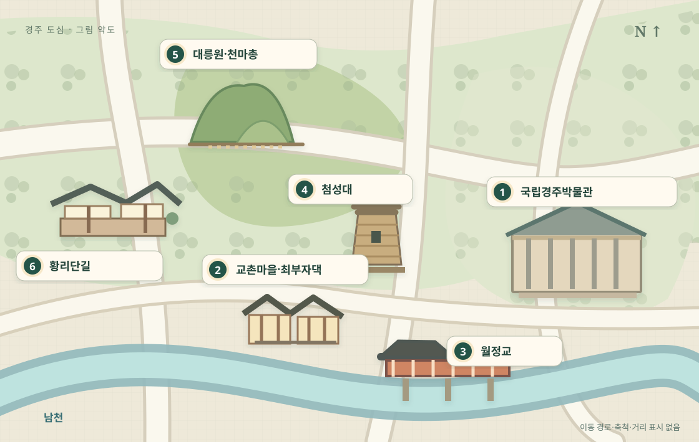

역사
국립경주박물관
유물 자체에서 확인한 사실과 안내문에 적힌 해석을 나눠 적기
QR → 장소 해설 → 관찰 기록 → 탐구 보고서. 기존 경주 답사 운영 체계를 바꾸지 않고 여섯 장소를 전시 구역처럼 다시 연결합니다.

현장에서 QR을 스캔하거나, 카메라 사용이 어렵다면 버튼으로 동일한 기록장에 접근할 수 있습니다.
유물 자체에서 확인한 사실과 안내문에 적힌 해석을 나눠 적기
가문의 나눔의 원칙을 오늘의 공동체 문제와 비교
복원과 원형 보존의 차이를 근거와 함께 기록
구조의 관찰과 천문 시설 해석을 구분
무덤의 구조와 전시 유물의 출처를 구분
관광 활성화와 주민의 일상 사이의 관계를 질문
선택 탐구: 쪽샘유적발굴관 현장 기록. 기존 총 7개 QR을 유지합니다.
현장 사진·관찰·출처를 기록한 뒤 기존 제출 경로에서 마무리합니다. 페이지에 새로운 공개 학생 명단이나 인증 없는 교사용 목록을 만들지 않습니다.